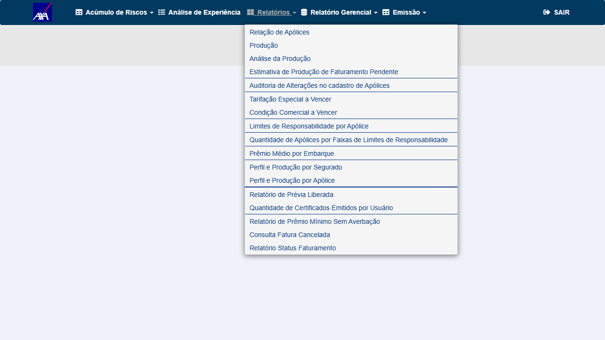

Grupo 1 — Reprodução do defeito (AXA /alfa/ alfanum)
1 CT · P1 ▾Tipo
Reprodução — Confirma o sintoma reportado no card (produto RCV não selecionável no Relatório de SLA).
Pré-condições
- AXA CITWEB HML alfanum:
https://axa-hml-faturamento.nsseg.com.br/alfa/login/ - Credenciais:
FRED/DERF - Build GESTÃO no momento do teste:
V 1.0.260713.2020
Passos
- Login
FRED/DERFno /alfa/ → menu principal - Clicar em Gestão (abre o módulo GESTÃO)
- Clicar em Relatórios (expandir submenu)
- Localizar o item SLA / Relatório de SLA na lista
- (Diagnóstico) inventariar todos os links de menu via
browser_evaluate
Resultado Esperado
O item SLA aparece no submenu Gestão → Relatórios, permitindo abrir o Relatório de SLA e selecionar/listar o produto RCV (ramo 59).
Resultado Obtido
✗ O submenu Relatórios lista 17 itens e NENHUM "SLA". O módulo GESTÃO inteiro tem 31 links de menu e nenhum "SLA" em lugar algum (nem em Relatórios, nem em Relatório Gerencial, nem em Emissão); o corpo da página não menciona "SLA". → Relatório de SLA inacessível; produto RCV não pode ser listado. Defeito reproduzido.
✗ REPROVADO (defeito reproduzido) — SLA ausente no menu · AXA CITWEB alfanum HML · 15/07/2026 · Causa raiz: ambiente/dados (ver boxes acima), não código.

EV1 — AXA /alfa/ · Gestão → Relatórios expandido: 17 itens, nenhum "SLA" (build V 1.0.260713.2020)
Grupo 2 — Referência (AXA não-alfa: funcionalidade existe)
1 CT · P2 ▾Tipo
Referência / Regressão — Confirma que o Relatório de SLA existe e é visível no AXA padrão (não-alfa), isolando o defeito ao ambiente alfanum.
Pré-condições
- AXA CITWEB HML não-alfa:
https://axa-hml-faturamento.nsseg.com.br/login/ - Credenciais:
FRED/DERF· Build GESTÃO:V 1.0.260706.1811
Passos
- Login
FRED/DERFno ambiente não-alfa → menu principal - Abrir Gestão → Relatórios
- Verificar presença do item SLA (e Justificativa de SLA)
Resultado Esperado
O item SLA aparece no submenu Relatórios do AXA não-alfa.
Resultado Obtido
✓ Menu SLA (
/Gestao/RelatorioSLA) presente e visível no submenu Relatórios, além de Justificativa de SLA (/Gestao/JustificativaSLA). Inventário: 33 links, 2 com "SLA". → Funcionalidade existe; ausência no /alfa/ é ambiente-específica.✓ APROVADO — SLA presente no AXA não-alfa · CITWEB HML · 15/07/2026

EV1 — AXA não-alfa · Gestão → Relatórios: item "SLA" presente (build V 1.0.260706.1811)